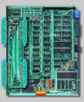

|
Would you like to know more about Ademir Carchano’s products? Read
about Ciel MSX2+ Turbo and see why there are many Brazilian MSX users
buying it.
|
| |
|
|
| |
Directory
Introduction
Installation
MSX à la carte
Benchmarks
|
|
|
|
|
|
|
| What is it? |
What is a Ciel MSX 2+ Turbo motherboard? It is a new MSX2+ motherboard made in 1996, having the following main features:
- A Z84C0010 - CMOS processor working at 7 MHz;
- 4 slots, two inside the computer and two outside (using Brazilian MSX Expert case);
- Up to 4 megabytes of memory mapper using 30 pin SIMM memory found on pc’s. You can use 256 kB, 512 kB, 1 MB or 4 MB memory, but you only have one connector for it. The motherboard already includes 256 kB of internal memory, you can choose to use that internal ram or the 30 pin memory using jumpers;
- Clock and calendar maintained with a NiCd rechargeable battery;
- Sound output using FM and PSG mixed. In one channel you have the FM and in the other one you have PSG + drums. There is an option to use a headphone connector too;
- You can use v9958 or v9938 by setting jumpers;
- Three reset connectors located on different parts of the motherboard;
- Connector for video expansions that are in the final phase of the project: image digitising, genlock, connection of multiple VDPs to work with up to 16 million colours (24 bits), etc. I do not know if Ademir will ever make those devices, since people did not seem to want them, as far as I know. But it makes it a lot easier for Ademir to add the new ADVRAM board he developed.
- Main ram can be placed on slot 2 or slot 3, using jumpers;
- Connector to led and Turbo switch available;
- The Turbo mode can be selected using the Turbo switch or via basic, using: turbo on (activates turbo mode), turbo off (deactivates turbo mode) and turbo (toggles the state).
|
|
|
|
|
| |
Introduction
In the golden years of MSX, Ademir was known in Brazil by his great
products that sold thousands of units each, like Megaram and his
MSX2/2+ add-on boards to Brazilian MSX1 computers. Very useful, because MSX2 was never
released in Brazil. Being an old fan of Ademir’s products, when I
heard about his MSX2+ Turbo motherboard, I did not think twice and I
started to search for someone willing to sell it. I had
to do this because Ademir did not have one for sale at that time;
unfortunately he cannot produce many boards and wait for people to buy
it. So it was not easy to find one, because those who have one will not
sell it. But Leonard Oliveira got one and sold it to MSX Brazilian team (MBT), and they
sold it to me in a MSX Expert plus case. You can learn more about Ademir’s
products at [1].
Installation
The MSX Ciel is made to be installed in an MSX Expert case. The Expert
is an old MSX1 made by Gradiente 15 years ago in Brazil. It was the
most popular MSX in Brazil. As a matter of fact, there were only two MSX
models made in Brazil: the Expert by Gradiente and the Hotbit by Sharp.
When Sharp stopped with the Hotbit, the Expert became the only MSX
machine being sold here in Brazil until the production was stopped in 1991. This makes it a natural choice for Ademir’s motherboard. You can
of course put it in a pc case, for example, but it will not be as easy
as using an Expert case.
No soldering is required to install it, unless you want to use the
external headphone connector. After taking away the old motherboard
it took me only 10 minutes to finish the installation and turn it on.
As you can see, it is really easy to mount.
MSX à la carte
One of the most interesting things about buying a Ciel motherboard
— as a matter of fact, any product developed by Ademir — is that you
probably will not find another motherboard that is exactly the same as yours, unless
you specifically want it. The reason is simple: Ademir is always willing to
hear your weirdest desires. So, everyone who has a
Ciel motherboard, has it with his own configuration. That is one of the
main advantages of buying products from Ademir, besides the quality,
of course.
For example, my good friend Daniel Caetano has a pc power connector
in his motherboard, so instead of using the power supply of the Expert, he
replaced it with a 300 W pc power supply.
He also has a 2 gigabyte hard disk and a 3.5” drive inside his computer, using
the 2 internal slots. Vinicius Beltrao and Luciano Sturaro have
the same configuration. Daniel even has a Sega Master System 3D
glasses set connected to the VDP in order to generate 3D images.
 |
| The Ciel motherboard,
taken from Ademir Carchano’s site.
|
|
|
My Ciel does not have these features, but it has switches that allow
me to turn on/off the slots without having to unplug the cartridges
and a switch that allows me to plug 2 cartridges in the same slot.
I need this to use my Megaram cartridge and my SCC at the same time, in order to run
the Konami games with SCC sound, without the need of cracked versions. For this
I use ExecROM from Adriano Cunha to load the megarom files used in
MSX emulators in Megaram. My board also uses AA batteries instead of the
NiCd battery, mainly because it is easy for me to change them.
Other people have other things in their Ciel computers.
The bottom line is, Ademir will modify the motherboard as you wish
with little or no cost.
Benchmarks
In order to measure the Ciel speed with turbo on and off, I used
some small two-line programs in basic. These programs were taken
from an old Brazilian book “Colecao de programas para MSX”, written
by Renato da Silva Oliveira and published by Aleph.
The results were are listed in the following table:
| Program | normal mode | turbo mode |
| Cogumelo | 41 m 58 s | 19 m 39 s |
| Cesto | 19 s | 9 s |
| Astroide | 35 s | 16 s |
|
You can see below some photos of these programs running.
I tried only these three basic programs because I thought it would
be a good way to measure the speed of the computer; if you want
me to try any other software to measure the speed for you, just send it to
me and I will run it on my computer.
The photos were taken using BrMSX, a great MSX emulator written by
Ricardo Bittencourt.
You can download the programs that I used here [2].
A short note from the editors:
Unfortunately Mauricio never handed in the finished version of his article; we apologise for that. However, the description he gives of the system was worth publishing.
|